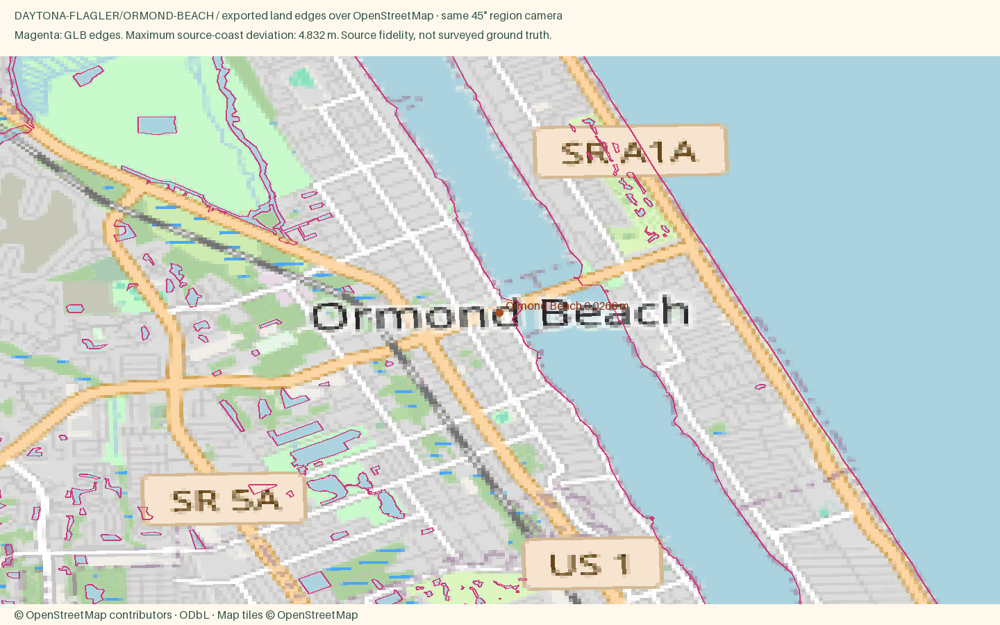

Ormond Beach
Open atlas · Accuracy CSV · Sourced medians
Region
Ormond Beach
Open districtDaytona's quieter neighbor to the north, with oak canopy roads, a small downtown and the same hard packed beach.
Source alignment

Manual fixes
- District palettes were selected editorially from local or regional character references; these colors are not a surveyed facade inventory.
- Curated real waterfront hero cameras; place-label coordinates remain the district source anchors.
- Flagler Beach pier is under reconstruction: mapped pier geometry is not a statement that the pier is open. See https://www.cityofflaglerbeach.com/334/Downtown-City-Projects.
- Existing Census land context continues beyond the OSM data rectangle, avoiding artificial water edges at the package boundary.